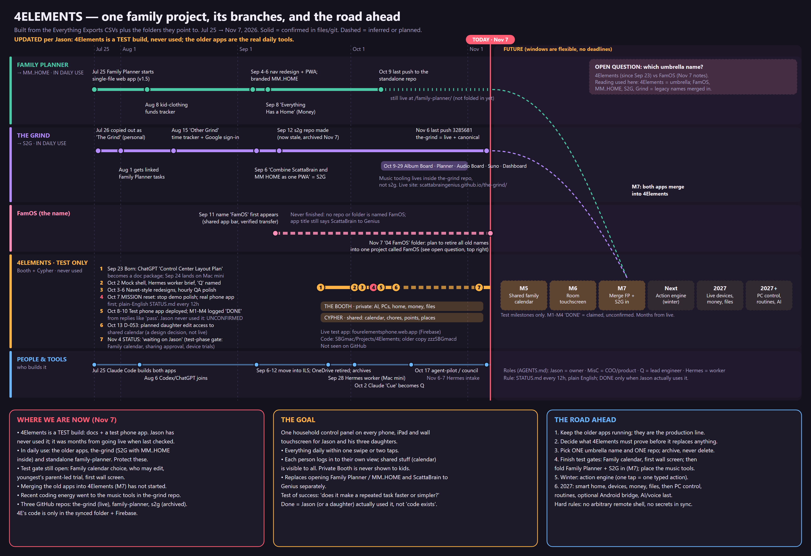

4Elements project map
Timeline of the family apps and where 4Elements fits. Built Nov 7, 2026. Open full size · ← 4Elements


Timeline of the family apps and where 4Elements fits. Built Nov 7, 2026. Open full size · ← 4Elements
